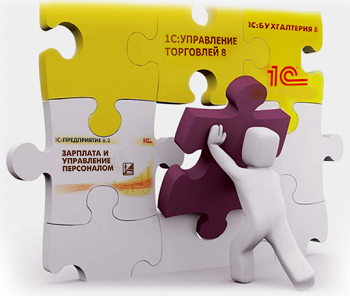

Добро пожаловать в дикое логово программистов 1С, где, работая не покладая лап, мы создаем цифровой порядок и совершенство учета на предприятиях
наших клиентов. Автоматизация управленческого учета, внедрение ERP, епросто услуги программистов 1С, интеграция и ускорение работы Вашей учетной системы
— всё это команда «1С: Автоматизация».
Разработка и внедрение программ (да! и на 1С тоже!) это не «тяп-ляп и готово». Это «тяп» обследованием Ваших бизнес процессов,
ответственный «шмяк» техническим заданием, «бац» разработкой, филигранный «хрясь» тестированием, и «бдыщ» внедрением "по самые помидоры..." (с)
В общем, комплексный и выверенный процесс, состоящий из многих увлекательных этапов.
У нас все начинается с обследования бизнес процессов. От нашего внимания не уйдет ни одно подразделение. Мы изучим все направления Вашей
деятельности, выявим все функции Ваших подразделений и их сотрудников, заглянем во все документы (какие покажете, конечно!), пересчитаем все виды активов.
А потом наши аналитики соберут все в проектную документацию, в которой будет описана организационная структура Вашего предприятия,
схемы документооборота, существующие информационные связи, вопросы внесения начальных данных и многое другое, о чем вы и не подозреваете.
После анализа и составления проектной документации мы составим и согласуем с Вами техническое задание на разработку, в котором прописано всё:
структура справочной информации, дизайн рабочих мест пользователей, права доступа к данным, карты бизнес процессов, макеты отчетов, количество рабочих мест,
требования к аппаратной части и многое другое.
Затем программисты 1С приступают к непосредственной разработке конфигурации: это время изощрённых технических экзекуций, хладнокровного кодинга и
бесчеловечного тестирования. Теперь Ваша корпоративная ERP-система обречена работать вечно и быстро. Благодаря нашим разработчикам, конечно.

Итак, разработка конфигурации завершена. Готовая система продемонстрирована Вам, учтены все Ваши замечания и дополнения.
Все готово к внедрению. Обычно, для старта внедрения ERP выбирают начало года или квартала. Сроки внедрения разнятся в зависимости от сложности
поставленной задачи. Обычно, авьтоматизация на 1С занимает от 6 месяцев до 1 года. Мы всегда настаиваем на том, чтобы наши программисты 1С участвовали
в процессе внедрения и находились на Вашей территории.